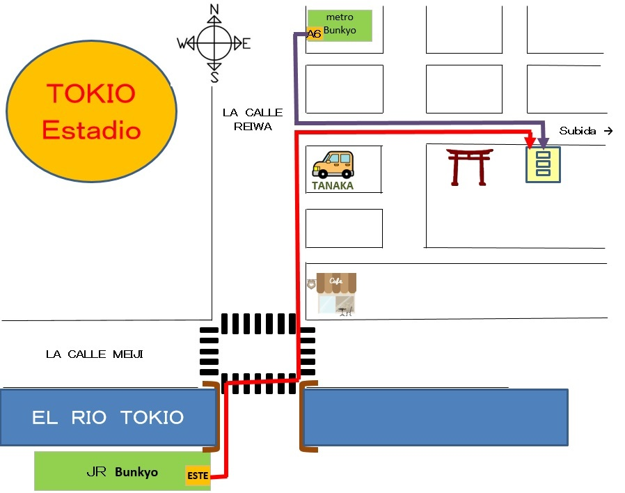

電話でオフィスまでの道順を案内します

| 1 | agente: | ABC tour. ¿Dígame? |
| 2 | cliente: | Hola. ¿Se encuentra el señor John? |
| 3 | agente: | A sus órdenes. |
| 4 | cliente: | Soy María. Gracias por enviarme un correo electrónico el otro día. Me gustaría comprar un boleto. ¿Puedo usar una tarjeta de crédito? |
| 5 | agente: | Sí, puede usarla, pero tendrá que venir. Si puede pagar en efectivo, puede pagar en una tienda de conveniencia. |
| 6 | cliente: | Quiero usar una tarjeta de crédito, así que iré. ¿Puede decirme cómo llegar a esa oficina? |
| 7 | agente: | Por supuesto. ¿Es buen punto de referencia la estación JR Bunkyo? |
| 8 | cliente: | Sí, por favor. |
| 9 | agente: | Salga desde la salida este de la estación, JR Bunkyo, y gire a la izquierda. |
| 10 | Pase el puente y atraviese en la primera intersección al lado del café. | |
| 11 | Siga recto en la Calle Reiwa por casi 50 metros. | |
| 12 | Podrá ver el estadio Tokio a la izquierda. | |
| 13 | Cruce a la derecha en la esquina del edificio de automóviles Tanaka. | |
| 14 | Siga recto por casi 30 metros. | |
| 15 | El edificio de tres pisos que está a la derecha, antes de la cuesta, es nuestra oficina y estoy en el segundo piso. | |
| 16 | Creo que llegará en cinco minutos desde la estación. | |
| 17 | cliente: | Entiendo. ¿Me puede dar indicaciones desde la estación metro Bunkyo? |
| 18 | agente: | Sí, por supuesto. |
| 19 | Salga desde la salida A6 de la estación, metro Bunkyo, y gire a la izquierda. | |
| 20 | Podrá ver el estadio Tokio a la derecha. | |
| 21 | Siga recto en la Calle Reiwa por casi 20 metros. | |
| 22 | Cruce a la izquierda antes del edificio de automóviles Tanaka. | |
| 23 | Desde ahí, es igual que antes. | |
| 24 | Está al lado del santuario. | |
| 25 | Creo que llegará en 2 minutos desde la estación. | |
| 26 | cliente: | Muchas gracias. ¿Puedo visitarle mañana por la tarde? |
| 27 | agente: | Está bien. Si se pierde, llámenos. |
| 28 | cliente: | Gracias. Nos vemos mañana. |
| 29 | agente: | Le esperamos. |